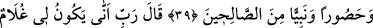
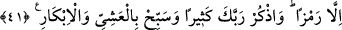

HAYIRLI NESİL İSTEMEK
38. Orada Zekeriya, Rabbine duâ etti: Rabbim! Bana tarafından hayırlı bir nesil
bağışla. Şüphesiz sen duâyı hakkıyla işitensin, dedi.
39. Zekeriya mâbedde durmuş namaz kılarken melekler ona şöyle nidâ ettiler:
Allah sana, kendisi tarafından gelen bir Kelime’yi tasdik edici, efendi, iffetli ve
sâlihlerden bir peygamber olarak Yahya’yı müjdeler.
40. Zekeriya: Rabbim! dedi, bana ihtiyarlık gelip çattığına, üstelik karım da kısır
olduğuna göre benim nasıl oğlum olabilir? Allah şöyle buyurdu: İşte böyledir; Allah
dilediğini yapar.
41. Zekeriya: Rabbim! (Oğlum olacağına dâir) bana bir alâmet göster, dedi. Allah
buyurdu ki: Senin için alâmet, insanlara üç gün, işaretten başka söz söylememendir.
Ayrıca Rabbini çok an, sabah akşam tesbih et.
“Orada Zekeriya Rabbine duâ etti.” Orası, hücrede Meryem’in yanında oturduğu
yerdir. Zekeriya (a.s.) Meryem’in Allah katındaki şerefini, derecesini görünce
kendisinin de, karısı Îşâ’dan kızkardeşi Hınne’ninki gibi necâbet sahibi, Allah katında
şerefli bir çocuğunun olmasını temennî etti. Karısının kısır olduğunu bildiği halde bunu
istedi. Çünkü kızkardeşi Hınne de kısırdı.
“Dedi ki: Ey Rabbim! Bana tarafından”, yani alışılmış vasat hâricinde mahzâ senin
kudretinden “tertemiz bir zürriyet ihsân et.” Yani sâlih, mübârek, senden râzı olacak,
senin de ondan râzı olacağın bir oğul ver.
“Zürriyet” nesil demektir. Hem tekile, hem çoğula, hem erkeğe, hem dişiye kullanılır.
Burada murad bir erkek çocuktur.
Sözlükte “temiz” anlamında olan ‘tayyib’ de, fiilleri ve hareketleri temiz olan;
muamelâtında habîs sayılan ve kınanan şeyler bulunmayan kimse demektir.
“Muhakkak ki sen duâyı hakkıyla işitensin.” Duâya icâbet edersin. Yani kabul eder